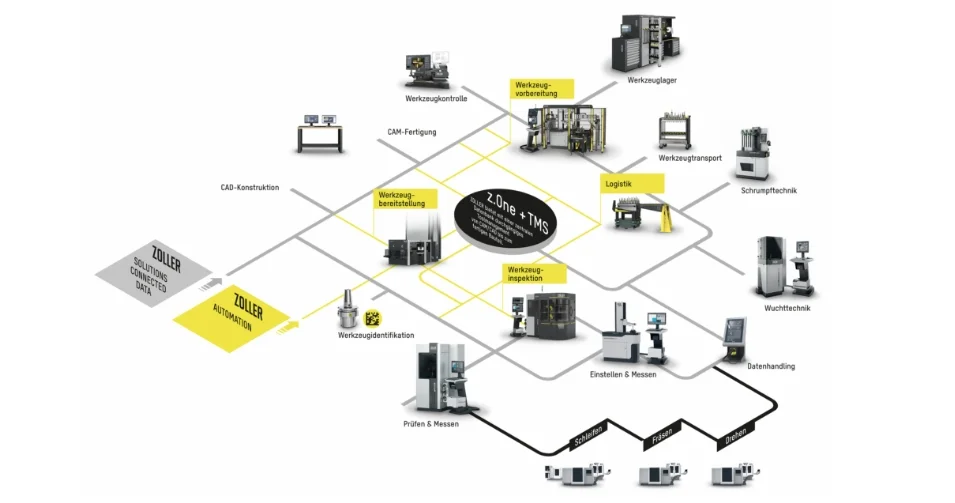
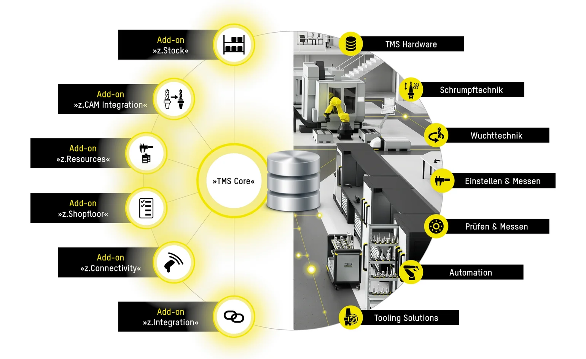
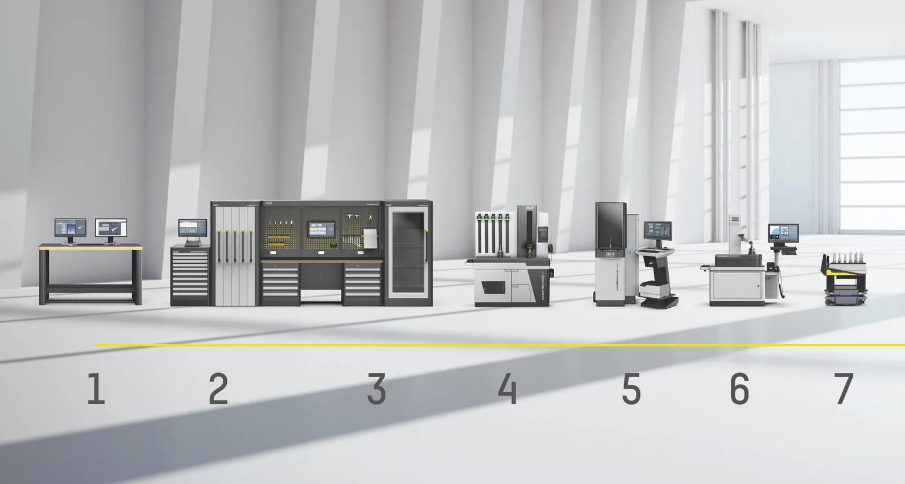
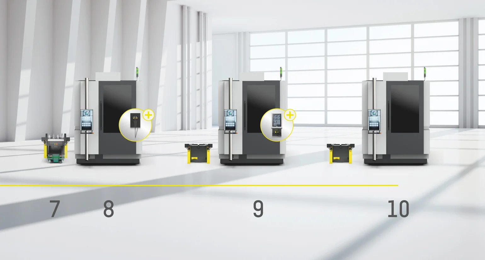

Start with a Solution – Enter a System.
Unsere Kunden profitieren von ganzheitlichen Lösungsansätzen, die wir seit Jahrzehnten vorantreiben. Das Resultat: Exzellente Effizienz.
Mehr erfahren
Ein effizientes Toolmanagement ist heute der Schlüssel zu stabilen Prozessen, niedrigen Kosten und einer transparenten Fertigung. Wer Werkzeugdaten, Betriebsmittel und Lagerbestände im Griff hat, verhindert Suchzeiten, Fehlbestellungen und Maschinenstillstände – und steigert die Produktivität vom ersten Tag an. Genau hier setzt ZOLLER an:
Sie starten mit dem leistungsstarken »TMS Core« und erweitern Ihr System Schritt für Schritt mit sechs Add-ons. Das Ergebnis: volle Transparenz, sichere Abläufe und ein Toolmanagement, das in Ihrer Fertigung zuverlässig mit Ihren Anforderungen wächst. Setzen Sie jetzt den Startschuss und machen Sie Ihr Toolmanagement bereit für die Zukunft. ZOLLER verbindet Software und Hardware zum Smart Factory Managementsystem, das Werkzeugprozesse messbar effizienter und sichtbarer macht:
Start with a solution – Enter a system

Duchgängiges Toolmanagement
Unabhängige, flexible Systemintegration
Modulare Softwarelösung
01 Prozesssichere Werkzeugbereitstellung
02 Digitalisierung der Werkzeugdaten
03 Transparente Werkzeugbestände
04 Rückverfolgbarkeit von Werkzeugen
05 Standardisierte Fertigungsprozesse
06 Maximale Werkzeugdatentransparenz
07 Standortübergreifender Zugriff
08 Nahtlose Integration in ZOLLER-Hardware
09 Durchgängige Integration bis zur Maschine
10 Messbare Produktivitätssteigerung

ZOLLER TMS ist modular aufgebaut und lässt sich gezielt erweitern – bis hin zur vollautomatisierten Smart Factory. Der Einstieg ist bewusst einfach: Sie starten mit genau den Funktionen, die Sie heute benötigen. So bleibt Ihr Toolmanagement langfristig investitionssicher – vom schnellen Einstieg bis zur vollständigen Endausbaustufe mit automatisierten Prozessen. Einfach starten. Modular wachsen. Zukunftssicher automatisieren.
Die ZOLLER-Floating-Lizenzen bieten maximale Flexibilität bei der Nutzung des Toolmanagement-Systems. Die Lizenzen stehen zentral im Netzwerk zur Verfügung, werden automatisch nach Bedarf zugewiesen und nach dem Schließen von TMS sofort wieder freigegeben. Dieses Lizenzmodell ist ideal für Fertigungsumgebungen mit wechselnden Anforderungen und stellt sicher, dass 100 % skalierbar auf alle Informationen zugegriffen werden kann.
ZOLLER TMS ist zentral auf dem Unternehmensserver installiert und stellt Werkzeug- und Fertigungsinformationen standortübergreifend sowie endgeräteunabhängig bereit – je nach verfügbarem Funktionsumfang. Der Zugriff erfolgt browserbasiert über mobile Endgeräte, während zentrale Updates den Wartungs- und Administrationsaufwand für Anwenderinnen und Anwender sowie die IT deutlich nachhaltig reduzieren.
ZOLLER TMS ist die zentrale Lösung für ein effizientes Toolroom-Management und sorgt für durchgängige Transparenz über den gesamten Werkzeuglebenszyklus. Von der Planung über die Bereitstellung bis hin zur Wiederaufbereitung werden alle Werkzeuge, Komponenten und Daten in einer zentralen Datenbank verwaltet.
Das Ergebnis: ZOLLER TMS wird zur gesteuerten, digitalen Drehscheibe der Fertigung. Suchzeiten werden reduziert, Bestände optimiert und Prozesse standardisiert. Vom CAM-System über das Lager bis hin zum Einstellen und Messen von Werkzeugen schafft ZOLLER TMS einen durchgängigen Workflow – für maximale Prozesssicherheit, Kostentransparenz und Produktivität im Toolroom.

Das Toolmanagement von ZOLLER stellt Werkzeugdaten vom Prozessstart bis zum Ende zur Verfügung.
Mithilfe der ZOLLER Smart Cabinets sind Werkzeuge, Komponenten, Zubehör und Komplettwerkzeuge digital erfasst und lokalisierbar.
Die Smart Cabinets sichern die automatische Werkzeugverfügbarkeit und reduzieren Suchzeiten – transparente Bestände sorgen für mehr Effizienz und Prozesssicherheit in der Fertigung.
ZOLLER »powerShrink« überzeugt durch ein auf Schrumpffutter abgestimmtes Induktionssystem, ein leistungsstarkes Kühlsystem sowie die intuitive Bedienung mit dem LED-gesteuerten ZOLLER »actbyLight«-Konzept.
Für den effizienten und leistungsorientierten Einsatz Ihrer CNC-Maschinen benötigen Sie feingewuchtete Werkzeuge. Mit dem ZOLLER »toolBalancer« wuchten Sie Ihre Werkzeuge mit unschlagbarer Präzision und nutzen ein langlebiges, nachhaltiges und ergonomisch designtes Produkt.
Einstell- und Messgeräte von ZOLLER liefern Präzision im μm-Bereich. Die intuitive Bedienung stellt sicher, dass jederzeit reproduzierbare Messergebnisse erzielt werden.
Für Transportaufgaben zwischen Werkzeuglager, Werkzeugvorbereitung und CNC-Maschine.
Das Toolmanagement von ZOLLER stellt Werkzeugdaten vom Prozessstart bis zum Ende zur Verfügung.
Mithilfe der ZOLLER Smart Cabinets sind Werkzeuge, Komponenten, Zubehör und Komplettwerkzeuge digital erfasst und lokalisierbar.
Die Smart Cabinets sichern die automatische Werkzeugverfügbarkeit und reduzieren Suchzeiten – transparente Bestände sorgen für mehr Effizienz und Prozesssicherheit in der Fertigung.
ZOLLER »powerShrink« überzeugt durch ein auf Schrumpffutter abgestimmtes Induktionssystem, ein leistungsstarkes Kühlsystem sowie die intuitive Bedienung mit dem LED-gesteuerten ZOLLER »actbyLight«-Konzept.
Für den effizienten und leistungsorientierten Einsatz Ihrer CNC-Maschinen benötigen Sie feingewuchtete Werkzeuge. Mit dem ZOLLER »toolBalancer« wuchten Sie Ihre Werkzeuge mit unschlagbarer Präzision und nutzen ein langlebiges, nachhaltiges und ergonomisch designtes Produkt.
Einstell- und Messgeräte von ZOLLER liefern Präzision im μm-Bereich. Die intuitive Bedienung stellt sicher, dass jederzeit reproduzierbare Messergebnisse erzielt werden.
Für Transportaufgaben zwischen Werkzeuglager, Werkzeugvorbereitung und CNC-Maschine.
Die am ZOLLER Einstell- und Messgerät geprüften Werkzeuge transportiert »coraLogistic« automatisiert. Über ZOLLER »zidCode 4.0« werden die zugehörigen Werkzeugdaten per Scan direkt und fehlerfrei an die CNC-Maschine übertragen. Jedes Werkzeug ist dabei eindeutig einer Maschine zugeordnet, die Daten gehen unmittelbar in die Steuerung ein. So stehen in der Fertigung jederzeit korrekte, aktuelle und konsistente Werkzeugdaten zur Verfügung – schnell, sicher und ohne manuelle Dateneingaben.
Das Ergebnis: Werkzeugdaten werden mit »zidCode 4.0« oder »zidCode« per RFID oder über Postprozessoren einfach, zuverlässig und prozesssicher direkt an die CNC-Maschine übertragen.

Für Transportaufgaben zwischen Werkzeuglager, Werkzeugvorbereitung und CNC-Maschine.
»zidCode« sorgt für eindeutige Werkzeugidentifikation und eine sichere, fehlerfreie Datenübertragung per QR-Code.
Mit ZOLLER »zidCode 4.0« übertragen Sie sämtliche digitalen Werkzeugdaten an die CNC-Steuerung – ohne Tipp- und Übertragungsfehler.
Postprozessoren bereiten Werkzeugdaten passend zur CNC‑Steuerung auf und ermöglichen eine automatische, fehlerfreie Datenübertragung.
RFID-funkgestützter Datentransfer ermöglicht die berührungslose Übertragung von Werkzeugdaten direkt an die CNC-Maschine.
Für Transportaufgaben zwischen Werkzeuglager, Werkzeugvorbereitung und CNC-Maschine.
»zidCode« sorgt für eindeutige Werkzeugidentifikation und eine sichere, fehlerfreie Datenübertragung per QR-Code.
Mit ZOLLER »zidCode 4.0« übertragen Sie sämtliche digitalen Werkzeugdaten an die CNC-Steuerung – ohne Tipp- und Übertragungsfehler.
Postprozessoren bereiten Werkzeugdaten passend zur CNC‑Steuerung auf und ermöglichen eine automatische, fehlerfreie Datenübertragung.
RFID-funkgestützter Datentransfer ermöglicht die berührungslose Übertragung von Werkzeugdaten direkt an die CNC-Maschine.
Mit ZOLLER TMS als zentraler Datenbasis beginnt die durchgängige Automation im Werkzeugprozess. Dabei steuert TMS »coraLogistic«, die intelligente Logistiklösung, automatisiert Abläufe wie Werkzeugidentifikation, Werkzeugvermessung, Werkzeuglagerung sowie den automatisierten Werkzeugtausch in der Maschine. ZOLLER TMS vernetzt »loadBox«, »coraMeasure LG« und »coraMachineLoad« zu einem geschlossenen, durchgängigen Prozess – von der Identifikation bis zur automatisierten Maschinenbestückung. Alle Werkzeugdaten werden in TMS verwaltet sowie prozesssicher und zuverlässig an die Maschine übergeben.
Das Ergebnis: ZOLLER TMS steuert den gesamten Werkzeugprozess und schafft die Grundlage für eine zukunftssichere 24/7-Automation auf höchstem Qualitätsniveau.

Automatisierte Werkzeuglogistik für einen effizienten und reibungslosen Fertigungsprozess.
»coraMachineLoad« belädt Werkzeugmaschinen automatisiert und sorgt für eine zuverlässige sowie effiziente Fertigungsversorgung.
Automatisierte Werkzeugkommissionierung für eine effiziente Fertigung mit den erforderlichen Werkzeugen zur richtigen Zeit.
Die automatisierte Werkzeugvermessung mit »coraMeasure LG« für präzise Messergebnisse und maximale Prozesseffizienz.
Automatisierte Werkzeuglogistik für einen effizienten und reibungslosen Fertigungsprozess.
»coraMachineLoad« belädt Werkzeugmaschinen automatisiert und sorgt für eine zuverlässige sowie effiziente Fertigungsversorgung.
Automatisierte Werkzeugkommissionierung für eine effiziente Fertigung mit den erforderlichen Werkzeugen zur richtigen Zeit.
Die automatisierte Werkzeugvermessung mit »coraMeasure LG« für präzise Messergebnisse und maximale Prozesseffizienz.

Unsere Kunden profitieren von ganzheitlichen Lösungsansätzen, die wir seit Jahrzehnten vorantreiben. Das Resultat: Exzellente Effizienz.

Der individuelle Austausch über Ihre Ziele und unsere Ideen dafür. Die Online-Beratung von ZOLLER direkt aus der Smart Factory. Vereinbaren Sie jetzt Ihren Termin.